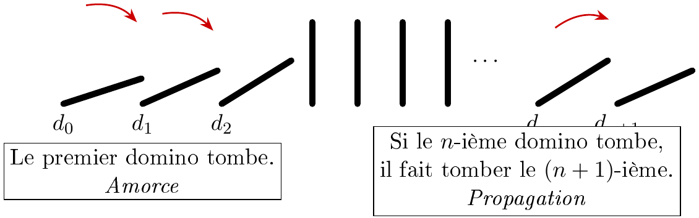
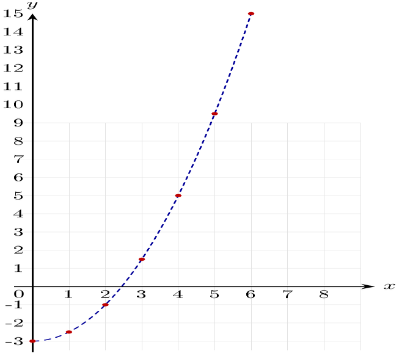
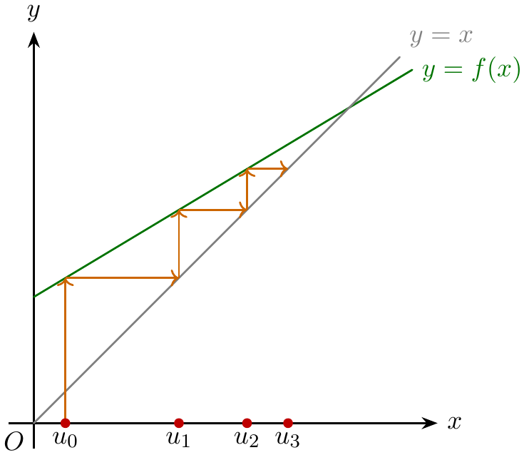

Chapitre 1 : Le principe de récurrence
Terminale spécialité · Chapitre 1 — Le principe de récurrence · cours de Frederik de Peyrelongue
\newpage
I. Raisonnement par récurrence
L'effet domino
On considère une file illimitée de dominos placés côte à côte. La règle veut que lorsqu'un domino tombe, alors il fait tomber le domino suivant, et ceci à n'importe quel niveau de la file. Alors, si le premier domino tombe, on est assuré que tous les dominos de la file tombent.

Si on suppose qu'un domino n° $k$ tombe, alors le domino suivant n° $(k+1)$ tombe également. C'est ce qu'on appelle le principe d'hérédité.
On dit qu'une propriété est héréditaire à partir d'un certain rang si, lorsque la propriété est vraie pour un entier $k$, alors elle est vraie pour l'entier $k+1$.
Si la propriété $P_{n}$ est :
- vraie au rang $n_{0}$ (Initialisation),
- héréditaire à partir du rang $n_{0}$ (Hérédité),
alors la propriété $P_{n}$ est vraie pour tout entier $n\geqslant n_{0}$.
Dans l'exemple, le premier domino tombe (initialisation). Ici $n_{0}=1$. L'hérédité est vérifiée (voir plus haut). On en déduit que tous les dominos tombent.
Méthode : démontrer une propriété par récurrence
Démontrer par récurrence que, pour tout entier naturel $n$ non nul, on a $2^{n}>n$.
Soit la propriété $P(n)$ : $2^{n}>n$.
Initialisation.
Montrons que $P(1)$ est vraie :
La propriété est donc vraie au rang $1$.
Hérédité.
Soit $k$ un entier supérieur ou égal à $1$. Supposons que la propriété $P(k)$ soit vraie au rang $k$, c'est-à-dire que $2^{k}>k$. (HR)
Montrons que la propriété est vraie au rang $k+1$, c'est-à-dire que $2^{k+1}>k+1$.
$P(k)$ vraie $\Longrightarrow$ $P(k+1)$ vraie.
Conclusion. La propriété est initialisée au rang $1$ et héréditaire, donc par le principe de récurrence :
Application
On considère la suite $(u_{n})$ définie par
Démontrer par récurrence que $u_{n}=(n+1)^{2}$.
On considère la suite $(u_{n})$ définie pour tout entier naturel $n$ par
Démontrer par récurrence que la suite $(u_{n})$ est croissante.
Inégalité de Bernoulli
Soit un nombre réel $a$ positif. Pour tout entier naturel $n$, on a
Démonstration au programme.
Soit la propriété $P_{n}$ : pour $a\in\R^{+}$, $(1+a)^{n}\geqslant 1+na$.
Initialisation. Montrons que la propriété $P_{n}$ est vraie au rang $0$ :
$P_{0}$ est vraie.
Hérédité. Soit $k$ un entier ; supposons que la propriété $P_{k}$ est vraie (c'est notre hypothèse de récurrence) :
Montrons que la propriété est vraie au rang $k+1$, soit $(1+a)^{k+1}\geqslant 1+(k+1)a$.
On a $(1+a)^{k}\geqslant 1+ka$, d'après HR.
Donc $(1+a)^{k+1}\geqslant 1+(k+1)a$.
Conclusion. De l'initialisation ($P_{0}$ est vraie) et de l'hérédité ($P_{k}$ vraie $\Longrightarrow$ $P_{k+1}$ vraie), par le principe de récurrence, pour tout entier $n$ la propriété $P_{n}$ est vraie.
Le rôle de l'initialisation
L'initialisation est indispensable dans une démonstration par récurrence, sinon on peut démontrer des propriétés fausses !
En effet, démontrons par exemple que la propriété « $2^{n}$ est divisible par $3$ » est héréditaire sans vérifier l'initialisation.
Supposons que, pour un certain entier $k$, « $2^{k}$ est divisible par $3$ ». Donc il existe un entier $p$ tel que $2^{k}=3p$.
Donc $2^{k+1}$ est divisible par $3$. L'hérédité est vérifiée et pourtant la propriété n'est jamais vraie ($2^{0}=1$ n'est pas divisible par $3$).
II. Représentation graphique d'une suite
Suite définie de manière explicite
Soit $f$ une fonction définie sur $\N$ et $(u_{n})$ la suite définie par $u_{n}=f(n)$.
Dans un repère du plan, on représente une suite par un nuage de points de coordonnées $(n\,;u_{n})$.
Pour représenter une suite $u$ dans un repère, on place :
- les indices $n$ sur l'axe des abscisses ;
- les termes $u_{n}$ sur l'axe des ordonnées ;
- les points de coordonnées $(n\,;u_{n})$ dans le repère, sans les relier (image de points).
Pour tout $n$ de $\N$, on donne $u_{n}=\dfrac{n^{2}}{2}-3$.
On construit le tableau de valeurs avec les premiers termes de la suite :
| $n$ | $0$ | $1$ | $2$ | $3$ | $4$ | $5$ | $6$ | $7$ | $8$ |
| $u_{n}$ | $-3$ | $-2{,}5$ | $-1$ | $1{,}5$ | $5$ | $9{,}5$ | $15$ | $21{,}5$ | $29$ |

Suite définie par récurrence
Soit $f$ une fonction définie sur $\N$ et $(u_{n})$ la suite définie par la relation de récurrence $u_{n+1}=f(u_{n})$ et le premier terme $u_{0}$.
Pour représenter cette suite, il est possible de calculer les termes un à un : $u_{1}$, $u_{2}$, …, $u_{n}$, et de se placer dans un repère orthonormal pour placer les points $U_{k}$ de coordonnées $(k\,;u_{k})$.

- Tracer la courbe représentant la fonction $f$.
- Tracer la droite d'équation $y=x$ : chaque point de cette droite possède une abscisse égale à l'ordonnée.
- Placer le point de coordonnées $(0\,;u_{0})$, le premier terme de la suite.
- À l'aide de la droite $\Delta : y=x$, on cherche l'antécédent de $u_{0}$ qui est $u_{0}$, que l'on obtient par projection orthogonale sur l'axe des abscisses.
- On obtient alors $u_{1}$ comme image de $u_{0}$ par la fonction $f$ : en effet $u_{1}=f(u_{0})$.
- On va itérer le même processus : on cherche l'antécédent de $u_{1}$ par la fonction $y=x$ ; l'antécédent est $u_{1}$ et on l'obtient par projection orthogonale sur l'axe des abscisses. Puis on peut obtenir $u_{2}$ comme image de $u_{1}$ par la fonction $f$. Et ainsi de suite : de proche en proche, on obtient tous les termes de la suite sans effectuer de calcul !!!
III. Sens de variation d'une suite
Définition
Soit un entier $p$ et une suite numérique $(u_{n})$.
La suite $(u_{n})$ est dite croissante à partir du rang $p$ si, pour $n\geqslant p$, on a $u_{n+1}\geqslant u_{n}$.
La suite $(u_{n})$ est dite décroissante à partir du rang $p$ si, pour $n\geqslant p$, on a $u_{n+1}\leqslant u_{n}$.
Méthode d'étude du sens de variation
Pour tout $n$ de $\N$, on donne la suite $(u_{n})$ définie par $u_{n}=n^{2}-4n+4$.
Démontrer que la suite $(u_{n})$ est croissante à partir d'un certain rang.
- Calculer $u_{n+1}-u_{n}$.
- Déterminer le signe de $u_{n+1}-u_{n}$.
- Conclure.
Pour tout $n$ de $\N^{*}$, on donne la suite $(v_{n})$ définie par $v_{n}=\dfrac{1}{n(n+1)}$.
Démontrer que la suite $(v_{n})$ est décroissante.
- Déterminer le signe du terme $v_{n}$ : ce signe doit être constant pour que cette méthode s'applique.
- Si, pour tout $n\in\N$, $v_{n}\neq 0$, déterminer $\dfrac{v_{n+1}}{v_{n}}$.
- Comparer $\dfrac{v_{n+1}}{v_{n}}$ à $1$.
- Conclure.
- $f$ est croissante sur $[p\,;+\infty[$ : par définition d'une fonction croissante, on a, pour tout entier $n\geqslant p$, comme $n+1>n$, $f(n+1)>f(n)$ et donc $u_{n+1}>u_{n}$.
- Démonstration analogue pour la décroissance.
\end{boxmethode}
Soit $f$ une fonction strictement croissante définie sur $\N$ et $(u_{n})$ la suite définie par la relation de récurrence $u_{n+1}=f(u_{n})$ et le premier terme $u_{0}$.
- Calculer les deux premiers termes de la suite.
- Conjecturer un sens de variation.
- Utiliser une récurrence pour affirmer votre conjecture.
IV. Suites majorées, minorées, bornées
Définitions
- Une suite $(u_{n})$ est majorée par un réel $M$ lorsque, pour tout entier naturel $n$, $u_{n}\leqslant M$. On dit que $M$ est un majorant de $(u_{n})$.
- Une suite $(u_{n})$ est minorée par un réel $m$ lorsque, pour tout entier naturel $n$, $u_{n}\geqslant m$. On dit que $m$ est un minorant de $(u_{n})$.
- Une suite est bornée lorsqu'elle est à la fois majorée et minorée.
$u_{n}=2+\dfrac{1}{n}$ pour tout $n\in\N^{*}$.
La suite $(u_{n})$ est minorée par $2$.
Remarque. Le minorant ou le majorant ne sont pas uniques : dans le cas ci-dessus, la suite $(u_{n})$ est aussi minorée par $0$.
Une suite majorée (resp. minorée) possède une infinité de majorants (resp. de minorants).
$u_{n}=\cos(n)$ pour tout $n\in\N$.
On a, pour tout $x\in\R$, $-1\leqslant\cos(x)\leqslant 1$, donc pour tout $n\in\N$, $-1\leqslant\cos(n)\leqslant 1$, soit $-1\leqslant u_{n}\leqslant 1$.
La suite $(u_{n})$ est bornée, car elle est minorée par $-1$ et majorée par $1$.
V. Suites arithmétiques
Définition
Une suite arithmétique est une suite de nombres dans laquelle on passe d'un terme au suivant en ajoutant toujours le même nombre, appelé la raison (souvent notée $r$) :
Corollaire. $(u_{n})$ est une suite arithmétique de raison $r$ et de premier terme $u_{0}$ :
Soit $(u_{n})$ une suite arithmétique de raison $r$. Alors :
- si $r>0$, la suite $(u_{n})$ est strictement croissante ;
- si $r<0$, la suite $(u_{n})$ est strictement décroissante ;
- si $r=0$, la suite $(u_{n})$ est constante.
Somme des termes d'une suite arithmétique
Soit $(u_{n})$ une suite arithmétique de raison $r$ et $S_{n}$ la somme définie par
Alors
Corollaire. Soit $(u_{n})$ une suite arithmétique de raison $r$. Alors
VI. Suites géométriques
Définition
Une suite $(u_{n})$ est dite géométrique lorsqu'il existe un nombre réel non nul $q$, qu'on appelle la raison de la suite, tel que, pour tout entier naturel $n$,
Autrement dit : $(u_{n})$ géométrique $\iff$ pour tout entier $n$, $u_{n+1}=q\times u_{n}$.
Corollaire. $(u_{n})$ est une suite géométrique de raison $q$ et de premier terme $u_{0}$ :
Soit $(u_{n})$ une suite géométrique de raison $q$. Alors :
si $u_{0}>0$ :
- si $q>1$, la suite $(u_{n})$ est strictement croissante ;
- si $q<1$, la suite $(u_{n})$ est strictement décroissante ;
- si $q=1$, la suite $(u_{n})$ est constante.
si $u_{0}<0$ :
- si $q>1$, la suite $(u_{n})$ est strictement décroissante ;
- si $q<1$, la suite $(u_{n})$ est strictement croissante ;
- si $q=1$, la suite $(u_{n})$ est constante.
Somme des termes d'une suite géométrique
Soit $(u_{n})$ une suite géométrique de raison $q\neq 1$ et $S_{n}$ la somme définie par
Alors
Corollaire. Soit $(u_{n})$ une suite géométrique de raison $q\neq 1$. Alors